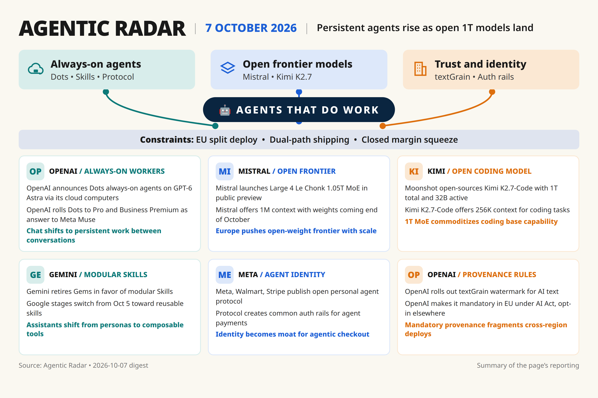

[51]
OpenAI announces Dots, always-on personal agents on GPT-6 Astra via own cloud computers, rolling to Pro/Business Premium.
Daily digest

[51] single-source launch claim needs second source on pricing, limits, and Astra availability.
[64] ban claim is reported via The Information only, needs confirmation; cost vs IP motive unclear.
Coverage skewed to model/agent launches, thin on evals and enterprise adoption data.